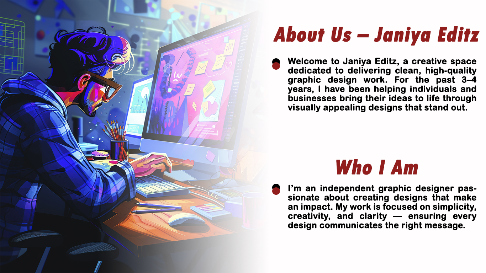

- About Us - Janiya Editz
-
- Welcome to Janiya Editz, a creative space dedicated to delivering clean, high-quality graphic design work. For the past 3–4 years, I have been helping individuals and businesses bring their ideas to life through visually appealing designs that stand out.
- Who Am I
-
- I’m an independent graphic designer passionate about creating designs that make an impact. My work is focused on simplicity, creativity, and clarity — ensuring every design communicates the right message.
- What I Do
- I specialize in:
-
- Graphic designing
- Creative edits
- Visual content for social media
- Thumbnails, posters, and digital artwork
Visitors can explore my portfolio to see a collection of completed projects and designs created for public viewing.
- My Values
- At Janiya Editz, every design is built on:
-
- Trust
- Quality
- Customer Focus
- Reliability
- Transparency
- Why Choose Janiya Editz
-
- 3–4 years of hands-on experience
- Fast and reliable delivery
- Creative yet simple designs
- Personalized service from a dedicated individual designer